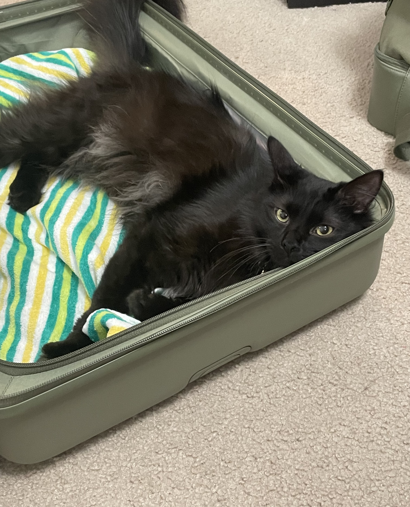
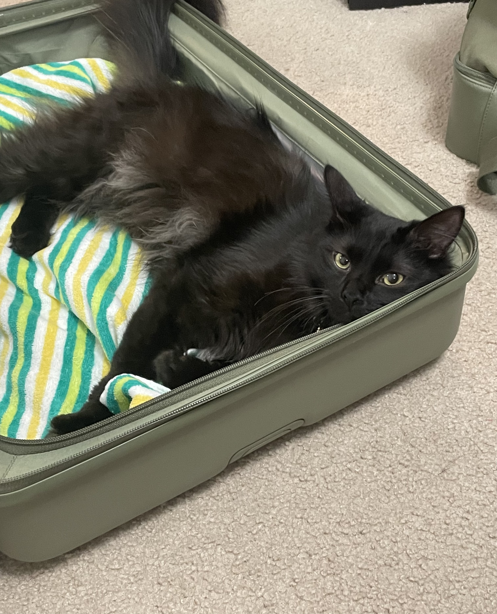

Kelsey Archer
1234 N Rogers · Bloomington, IN 47403 · (555) 555-5555 ·
kelsey.archer@du.edu
I am a library and information science student & former educator
- I currently work in higher education
- I am passionate about decolonzing archives and museums
 
